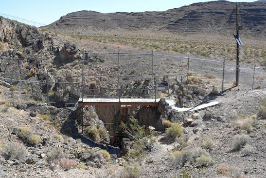
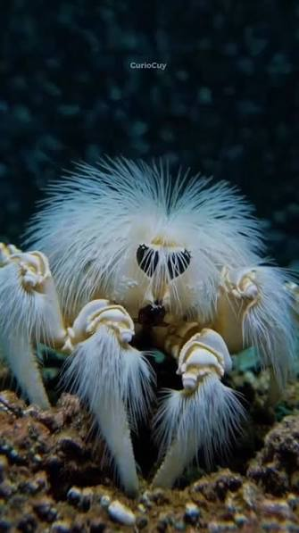
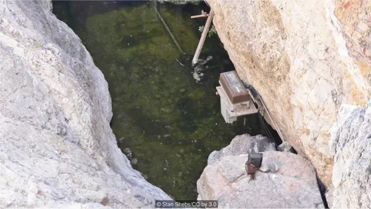

El animal mas aislado y solitario del planeta

Dylan Vega
5'A Prog
28/09/2026
Un pez enano que mantiene los titulos que pocas crituras ostentan y que no te podras creer
El Cyprinodon diabolis, mejor conocido como el Pez Cachorrido del Hoyo del Diablo, vive en uno de los lugares mas secos del planeta, siendo este el desierto de Mojave, en EE.UU.
Es un pez tan pequeño que no llega a medir mas de 3 centimetros, con un ejemplar adulto pesando entre 4 y 6 gramos y se estima que solo hay alrededor de 75 ejemplares vivos actualmente.
Pero lo mas sorprendente de esta especie es que, desde que aparecieron en el planeta hace mas miles de años, cada ejemplar solo ha vivido en un espacio no mas grande al de la sala de tu casa. Lo que hace de estos peces, los mas raros de todos los vertebrados acuaticos y la especie mas aislada y solitaria de la tierra.

Y ahora se sabe donde viven.
La aislacion
Este pez vive en una sola cueva de piedra caliza conocida como el Hoyo del Diablo, en el condado de Nye de Nevada, EE.UU.
Si bien la caverna tiene salida al aire, el agua que está adentro no se conecta con ninguna otra fuente acuática.
Mas leidas
El nuevo juego "Pukey Goddess Shot Trick" del tipo ruleta rusa en el que enfrentas a un demonio en una competencia de bebidas en el que tu alma esta en juego.

El cangrejo yeti, un curioso crustáceo de las profundidades del océano conocido por las estructuras parecidas a pelos que cubren sus patas.
El anime de "One Piece" continúa su aventura con nuevos episodios y una nueva etapa que llevará a los Sombrero de Paja hacia nuevos desafíos.
"Hollow Knight: Silksong", la esperada aventura de Hornet que lleva a los jugadores a explorar un nuevo reino lleno de enemigos, secretos y desafíos.

A 15 metros de profundidad del agujero se encuentra la piscina en la que siempre ha vivido cada uno de estos peces silvestres.
A un costado de este estanque hay una repisa de piedra caliza de unos 3 x 6 metros. Esta es la única fuente de alimento y zona de desove que se conoce de estos peces.
Y es lo que hace de este animal la especie con el área de distribución geográfica más pequeña del mundo.
El pez también sobrevive a condiciones continuamente duras, con temperaturas constantes de 32º C a 33º C, niveles bajos de oxígeno y cambios esporádicos en el nivel del agua.